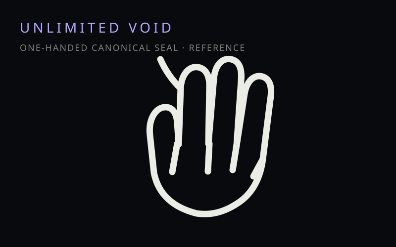
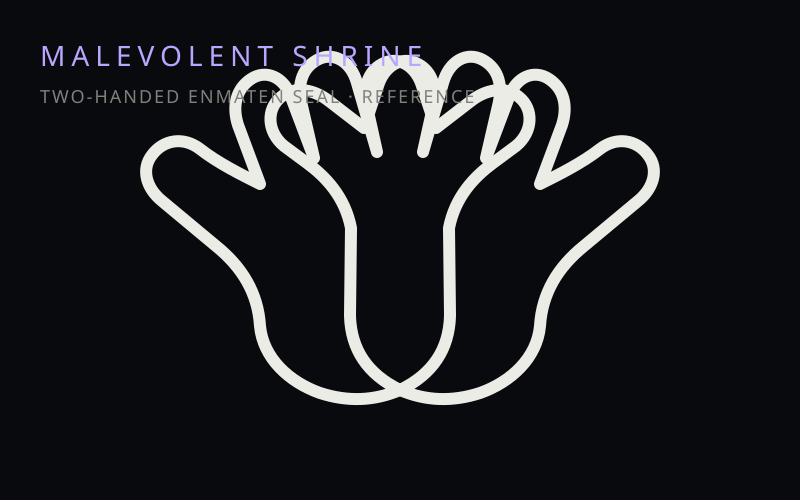
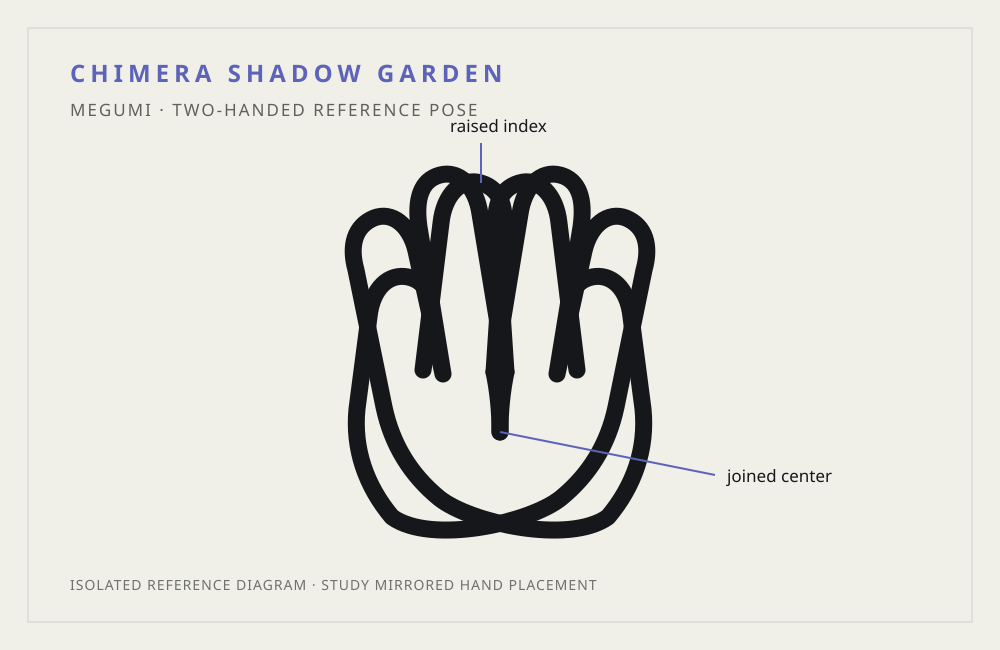
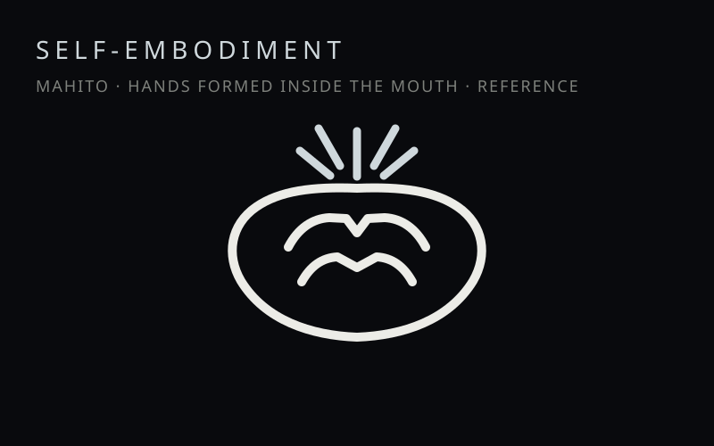

Satoru Gojo
Limitless · Six Eyes
The strongest modern sorcerer, whose mastery of Limitless, the Six Eyes and Unlimited Void defines the upper edge of modern jujutsu.

A visual field guide to the rules, people, and Domains that shape Jujutsu Kaisen. Less database, more field notebook—with a little cursed atmosphere.
The rules underneath the fights: cursed energy, techniques, vows, barriers, and why raw power is only one variable.
Jujutsu is powered by cursed energy generated from negative human emotion. Sorcerers control its flow to reinforce the body and activate cursed techniques. Reserves, output, efficiency and control are separate qualities; having more energy does not automatically mean using it better.
Characteristic cursed techniques engraved into a sorcerer, with applications shaped by skill, conditions and interpretation.
Restrictions can be exchanged for advantages, but the exact terms and risks matter.
Veils, barriers, Simple Domain and Domains manipulate space and the rules applied within it.
A high-level technique that manifests a Domain and can embed a sure-hit effect in completed lethal Domains.
A binding condition imposed on the body; Toji and Maki show how extreme physical advantages can result from severe cursed-energy trade-offs.
A cursed-energy distortion that occurs when cursed energy lands within 0.000001 seconds of a physical hit, temporarily sharpening the user's understanding of cursed energy.
Jujutsu rewards conditions. A vow, barrier, range limit, timing window or technical drawback can change what a technique can do. The fun is in the rules being specific enough to exploit.
Characters selected for what they contribute to the system, conflicts, and turning points—not because a fictional tier list needed another column.
The strongest modern sorcerer, whose mastery of Limitless, the Six Eyes and Unlimited Void defines the upper edge of modern jujutsu.

A physical outlier whose growth in cursed-energy control and combat technique makes him central to the story's changing rules.

Zenin heir and Ten Shadows user whose incomplete Domain, Chimera Shadow Garden, shows how a Domain can still be dangerous before completion.

A technique user whose Resonance and Hairpin attacks demonstrate how targeting conditions can turn small setups into decisive damage.

The King of Curses and an extreme example of technique refinement, especially through the open-barrier construction of Malevolent Shrine.

Gojo's former partner and a Special Grade sorcerer whose ideology becomes one of the forces behind the series' largest conflicts.

A non-sorcerer whose complete lack of cursed energy comes with extreme physical ability and an unusual relationship with barriers and cursed tools.

A precise Grade 1 sorcerer whose Ratio Technique turns a simple mathematical condition into a reliable combat method.

A curse whose Domain, Self-Embodiment of Perfection, weaponizes his ability to manipulate the soul without normal physical contact.
Four of the archive's most visually and mechanically distinctive Domains, with the differences that actually matter.

Gojo manifests Limitless as an overwhelming void of information, immobilizing targets caught by its sure-hit effect.

Sukuna materializes his Domain with an open barrier, applying Cleave and Dismantle across its effective area rather than enclosing a conventional separate space.

An incomplete Domain built around fluid shadows and Ten Shadows technique applications. It lacks the complete barrier/sure-hit package of a finished lethal Domain.
Mahito's Domain enhances Idle Transfiguration so the soul can be affected without his normal need to physically touch the target.
Cleaner instructional diagrams: the casting pose is large, the grip is labelled, and the reference is separated from the character artwork.

One-handed activation pose associated with Gojo's Domain. The diagram emphasizes finger placement instead of burying the sign inside a character image.

Enmaten-associated two-handed seal. The reference isolates the interlocked hand structure from the surrounding scene.

Two-handed activation pose used with Megumi's incomplete Domain, presented as a compact study rather than a cropped manga panel.

The transformed-hand arrangement inside Mahito's mouth is visually unique, so the diagram treats the mouth as part of the activation structure.
Hidden Inventory, Shibuya, the seven-rule primer, and the current canon status are now one clearly marked destination.
Gojo and Geto's past → Shibuya → the Prison Realm → aftermath → where the wider JJK story stands now.